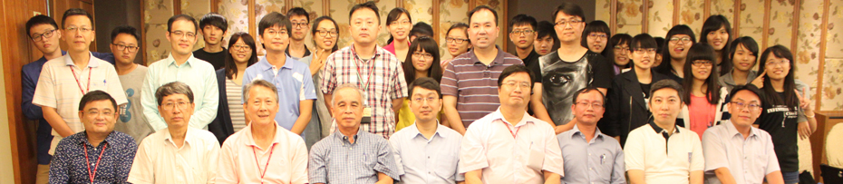
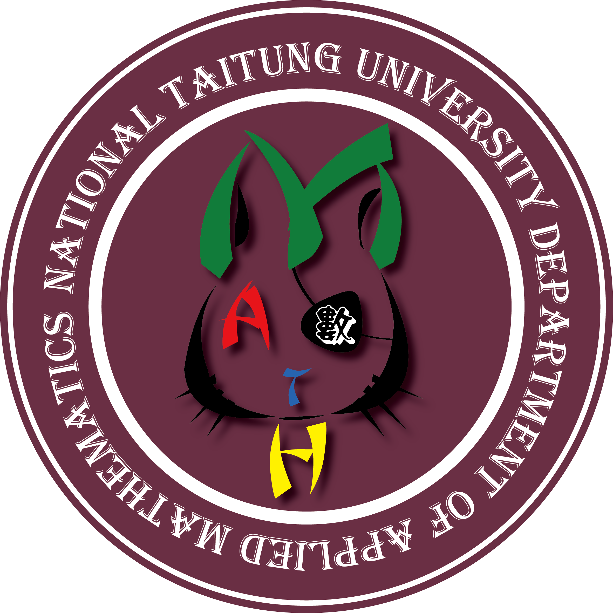

- 發展願景
- 知識傳授：教導學生具有基本的數學知識，同時經由學習數學過程中，提高學生發掘、分析及處理問題的能力。
- 創新思維：教導學生如何培養具獨立思考及創造嘗試的能力。
- 自我表現：使學生能以忠誠、勤奮、誠實、篤行的個人特質，與專業知識，讓主管與同儕認同。
- 團隊精神：訓練學生具有組織能力與溝通技巧，讓他們能夠發揮團隊力量，來解決專業問題。
- 多元學習：經由專業之學習，培養學生邏輯思考、資料分析等能力。並教育學生不斷的自我成長，透過不同管道，吸收各項新知識 。
- 系徽

- 系上107學年度第一學期活動
| 日期 |
活動 |
| 9/17 |
期初系大會 |
| 10/1～10/3 |
籃球新生盃 |
| 9/29 |
迎新茶會 |
| 10/4～10/5 |
籃球樂活盃 |
| 10/16～10/18 |
羽球新生盃 |
| 10/22～10/26 |
羽球樂活盃 |
| 10/18～10/25 |
排球新生樂活盃 |
| 10/27～10/28 |
迎新宿營 |
| 11/25 |
桌遊闖關大賽 |
| 12/23 |
聖誕晚會 |
| 10/24 |
期末系大會 |
- 外部連結